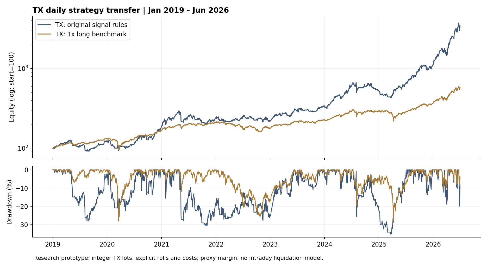

保留訊號，重訓模型
60 日均線、五日報酬預測與實際空手等待放空規則保持；每 60 日依既有程序重訓，排除尚未成熟的五日標籤。
交易策略研究 / TX 日線
從趨勢 0050 延伸到大台 TX，保留訊號架構，以台指期資料重新訓練模型，將整數口數、換倉與交易成本納入計算。
歷史模擬，非實盤績效。此為累積報酬，不是年化；日夜盤估值尚未模擬盤中強平。
台指期版是 2026 年 9 月新做的跨商品移植研究，沒有搜尋新的交易參數。0050 的策略繳交後驗證，另見 0050 報告；台指期並非當初已繳交並持續實盤運行的版本，也不把已看過的台灣市場行情稱作全新獨立樣本外。
| 觀察期間 | 報酬 | 日收盤 MDD | 日夜盤 MDD |
|---|---|---|---|
| 2019/1–2026/6 | 年化 60.39% | −35.17% | −35.92% |
| 2025/12–2026/6 | 累積 240.99% | −19.87% | −24.05% |
| 2026 上半年 | 累積 209.11% | −19.87% | −24.05% |
只看每天日盤收盤，會漏掉持倉在夜盤中承受的較深回撤。加入高低點估值後，上半年 MDD 從 −19.87% 變為 −24.05%；交易與期末淨值沒有改變。
日夜盤 MDD 依固定持倉及各時段高低價估值。本次最深回撤不受同時段高低先後次序影響；不代表已重建逐筆成交或強平。

60 日均線、五日報酬預測與實際空手等待放空規則保持；每 60 日依既有程序重訓，排除尚未成熟的五日標籤。
到期週星期一日盤開盤轉入次月；訊號用連續價格，交易損益用實際合約價格。舊單平倉、新單開倉都扣成本，不把月間價差當獲利。
大台每點 200 元。每口每邊假設手續費 50 元、滑價 1 點，再加期交稅；本金與口數取整會影響績效。
以逐筆交易現金流及持倉市值重建淨值，與主引擎核對；另用只有換倉價差、沒有市場漲跌的案例，確認不會產生虛構收益。
目標一倍做多 TX 基準，同期間年化 26.29%，2026 上半年累積 56.51%；上半年日夜盤 MDD 為 −12.90%。它也採整數口數與再平衡門檻，實際曝險常低於一倍，並非 0050 買入持有。
較高成本情境（每邊 100 元、2 點滑價）下，全期年化降至 58.74%。研究保證金暫以名目金額 20% 計算，尚未重建歷史公告、券商追繳與盤中強平；不能據此宣稱完整可執行績效。此結果亦不能直接套用到較小本金帳戶。
使用期交所 2014/1–2026/6 共 150 個月份的官方 TX 日行情。回測期間為 2019/1/2–2026/6/30，共 1,817 個日淨值點；另核對 1,816 個夜盤時段，持倉期間沒有缺少夜盤 OHLC 的日期。